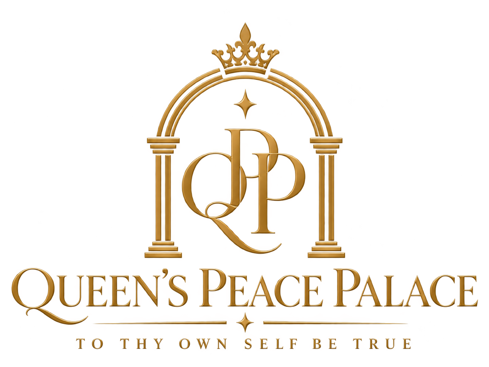
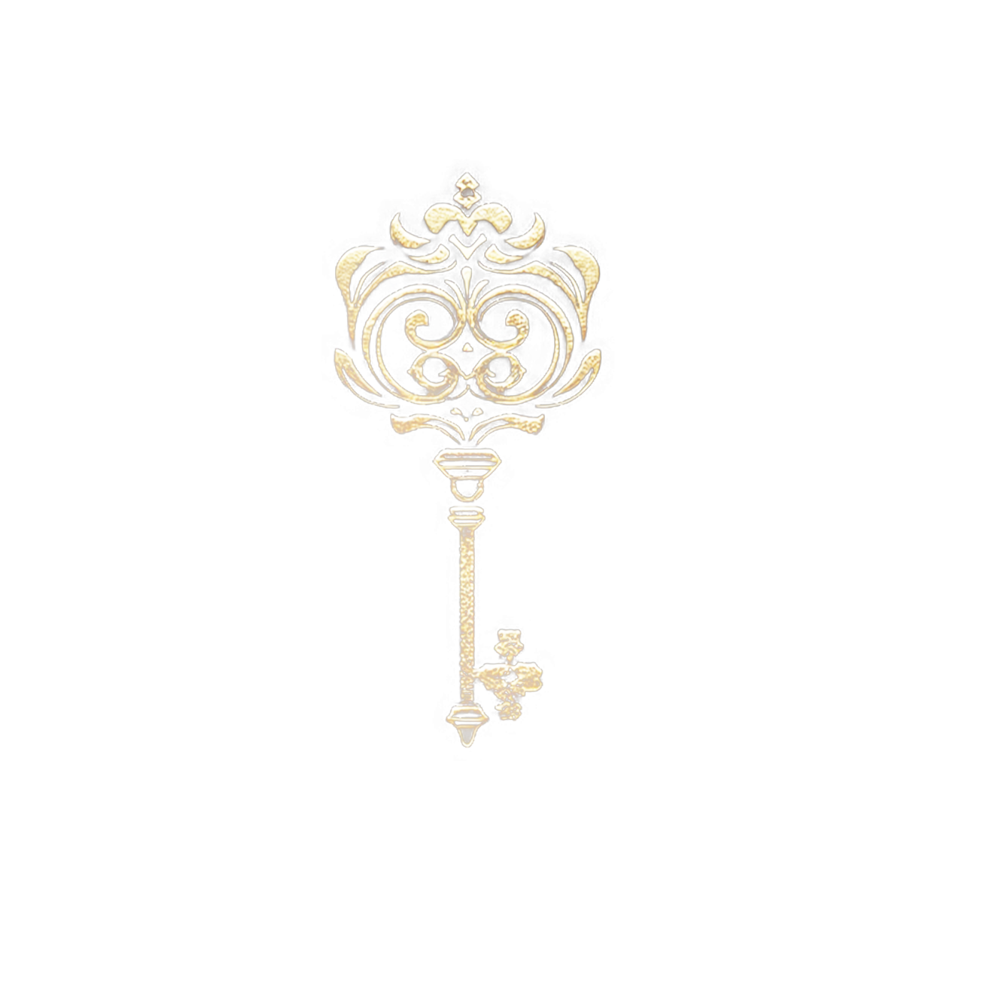
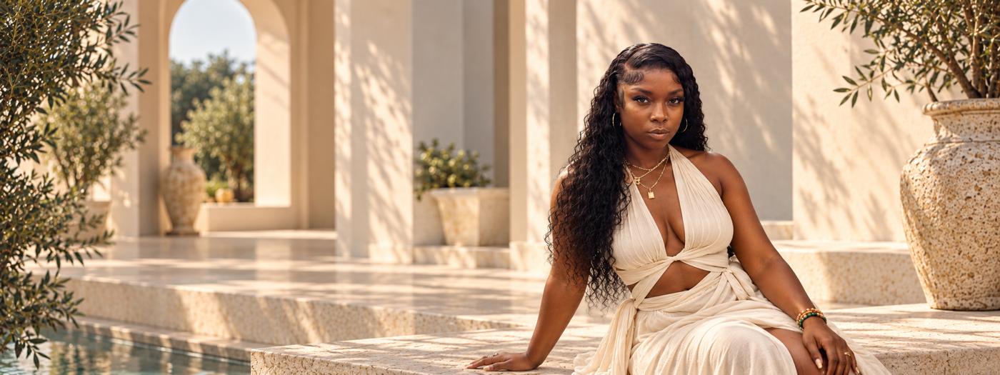
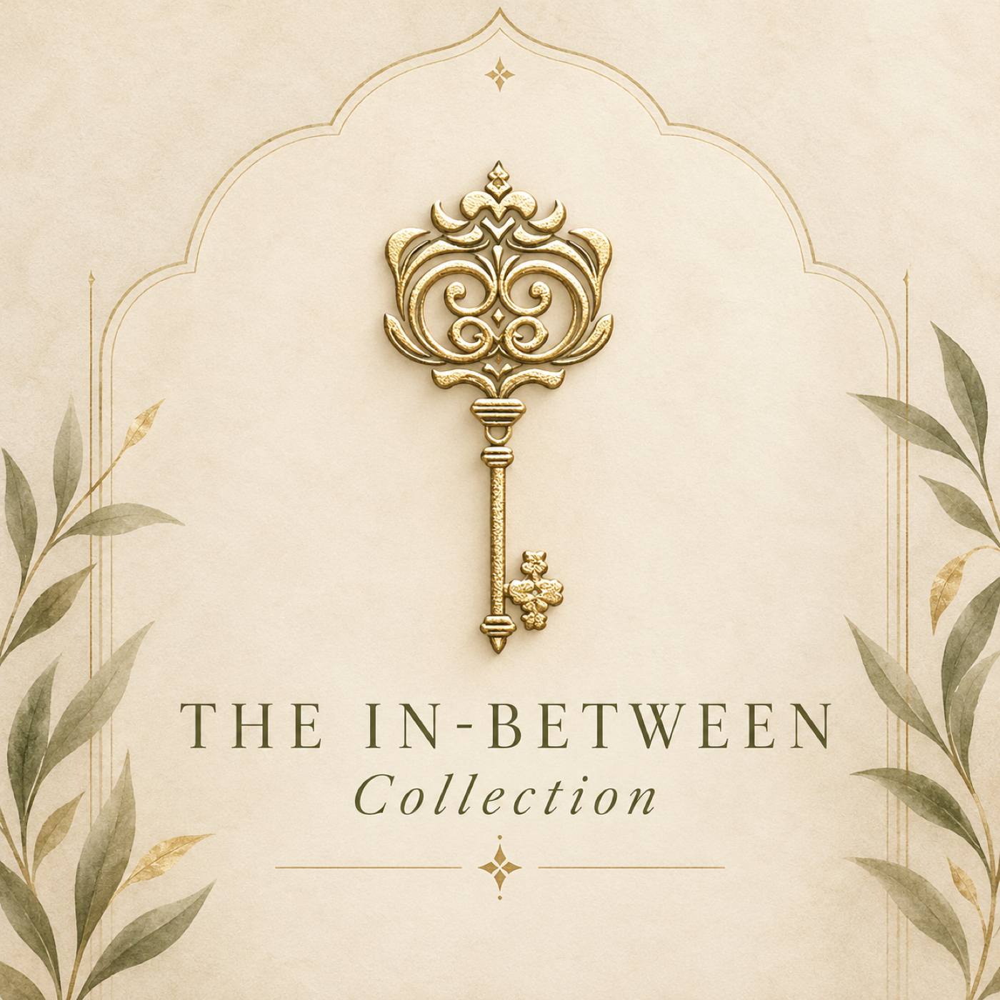
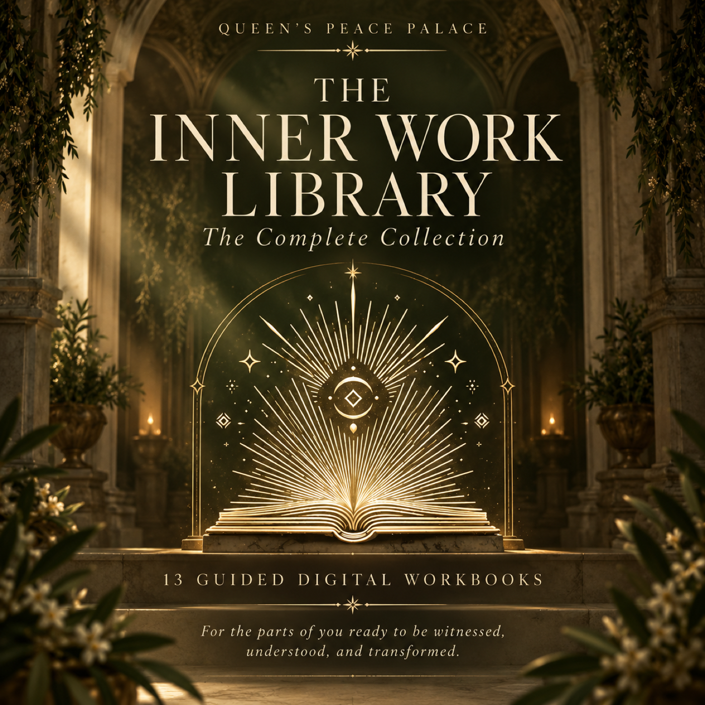

Queen’s Peace Palace
Main brand · sanctuary
The Brand Manuscript

Where it began, what we built, and how to carry it forward.
Enter the manuscriptWelcome to the Palace
Your Brand Manuscript is the living source of truth for Queen’s Peace Palace.
Inside, you’ll find the strategy, visual language, messaging, symbols, content direction, and assets created throughout the development of the brand.
It also documents where the project began, the decisions that shaped it, and how to keep the brand consistent as it continues to grow.
This guide can evolve with the brand.
Where we began
When the project began, Queen’s Peace Palace already had a clear heart: support for people moving through change, transition, and deeper self-discovery.
What it needed was a clearer digital world around that work—one place where private coaching, the podcast, WhatsApp community, inquiry experience, philosophy, and future resources could live together without feeling disconnected.
The direction centered transitions, thresholds, self-trust, clarity, and alignment. The brand needed to feel spiritual without losing its humanity: immersive enough to feel like entering the Palace, clear enough that someone could understand where to begin.
The system also needed room for digital resources and self-guided workbooks, with a structure that could grow without becoming cluttered or confusing.
The questions that shaped the brand
What we built
Not a collection of disconnected offers, but one coherent ecosystem with different places to enter depending on what someone needs.
Main brand · sanctuary
Direct spiritual life coaching
Philosophy, Ajunay, brand story, and self-trust
Self-guided digital reflection
Sequential support for transitions
Guided reflection for specific patterns and wounds
WhatsApp community · shorter touchpoints
Podcast · voice and perspective
Newsletter · deeper email connection
Link-in-bio · Formspree inquiry · Payhip checkout · MailerLite
From idea to ecosystem
Where we started
What exists now
The foundation
What the motto means
To Thy Own Self Be True means returning to who you are beneath pressure, performance, fear, expectation, and survival.
It’s an invitation to listen inward, honor what’s real, and make choices that feel aligned with your truth.
At Queen’s Peace Palace, it isn’t about perfection. It’s about honesty, self-trust, and the courage to meet yourself more fully.
Clarity often comes when you slow down enough to hear yourself. The work here isn’t about becoming someone else. It’s about understanding what shaped you, tending to what still needs attention, and making more room for the life that feels true now.
Who the Palace is for
Visual identity
Warm Cream and Deep Olive establish the core light and dark environments. Use them generously.
Warm Gold highlights meaningful details. Muted Olive and Soft Stone create softer transitions.
Use Deep Olive text on Cream, or Cream text on Deep Olive. Reserve Gold for accents—not long body copy.
Typography
Playfair Display
Headings · editorial momentsLora in reflection.
Reflective accents · italic languageMONTSERRAT
Body · UI · buttons · navigation · pricingSymbol language

Private Sessions · care · self-return

The In-Between Collection · thresholds · becoming

The Inner Work Library · reflection · self-study
Sanctuary · philosophy · entering the work

Notes from the Palace · connection · reminders

Letters From Your Higher Self · voice · perspective
Symbol rule Do not add unrelated spiritual symbols simply because they look mystical.

Photography + art direction
Mediterranean architecture, cream stone, arches, warm golden light, olive greenery, cinematic framing, soft editorial photography, intentional symbolism, and negative space.
Random crystals, generic spiritual stock, excessive tarot, neon aesthetics, clutter, gradients, unrelated mystical icons, and generic AI wellness imagery.
Slow push-in, restrained parallax, typography reveals, soft fade-up, and quiet hover movement. No autoplay video, heavy 3D, scroll hijacking, bouncing, or decorative loops. Keep mobile motion simpler.
Voice + writing
Warm · clear · reflective · emotionally intelligent · spiritually grounded · conversational · thoughtful · intimate · human
Overly mystical · clinical · preachy · vague · corporate · overly polished · generic coaching language · AI-generated
Use contractions. Keep paragraphs shorter. Prefer simple, grounded language. Avoid explaining the same concept multiple ways. Use words such as sacred, transformation, healing, alignment, journey, and becoming only when they genuinely add meaning.
Prefer clear and emotionally resonant over beautiful but vague.Core phrases
“To Thy Own Self Be True.”
“Spiritual life coaching for the in-between seasons of life.”
“For the space between who you were and who you are becoming.”
“You don’t need to have the answer before you arrive here.”
“Sometimes you know something has changed before you know what comes next.”
“Start with the part of you asking to be witnessed.”
Content direction
Endings, beginnings, uncertainty, thresholds, and the space before clarity.
Inner knowing, decision-making, rebuilding confidence, and hearing yourself.
Boundaries, attachment, repetition, disappointment, and relational truth.
Roles, expectations, self-definition, authenticity, and what no longer fits.
Reflection, emotional honesty, wounds, reclamation, and personal responsibility.
Meaning, intuition, belief, surrender, and grounded spiritual practice.
Personal insight, lived perspective, questions, observations, and Palace notes.
What goes where
Discovery, education, personal reflections, and visible brand storytelling.
Shorter WhatsApp reminders, prompts, and reflections.
Podcast conversations and longer perspectives.
Deeper written connection, announcements, and thoughtful email updates.
Self-guided reflection and practical tools.
Direct, personal support for the season someone is in.
The guided libraries

Sequential collection
Outgrow · Release · Cross · Arrive · Build
Designed as a progression through transition, threshold, and new ground.
Find the workbooks
Standalone library
Focused guided reflection for specific patterns, wounds, and reclamation work.
Find the workbooksBrand assets
Download the approved files available today. New campaign, launch, and template assets can be added here as the Palace grows.
How to use your Brand Manuscript
Use this portal whenever you’re creating something for Queen’s Peace Palace—whether that’s a social post, flyer, collaboration, new offer, email, event, or website update.
The goal isn’t to make everything identical. The goal is to make everything feel like it belongs to the same world.
Website care + ONYX support
Your website was custom developed around the brand system documented here. Copy corrections, link changes, image swaps, pricing updates, small layout adjustments, and basic product additions can be requested from ONYX Creatrix.
Larger changes, new pages, new functionality, offers, redesigns, or integrations may require a separate scope or quote.
Request an updateStep-by-step instructions can be provided upon request. Because the site is custom built, ask for guidance before changing code, integrations, or structural components.
This helps protect the design, checkout systems, forms, functionality, and mobile experience already in place.
Request update instructionsBefore replacing brand colors, fonts, symbols, major messaging, or page structures, return to this Manuscript. The brand can evolve. The goal is to make intentional changes rather than slowly drifting away from what has already been built.
Quick reference